Low-profile cases#
The low-profile cases are a thinner alternative to the openGrid cases, for a panel that sits on a desk. There is no openGrid board underneath. The cases join directly to each other, and the keys sit 10 mm off the desk instead of 21.8 mm.
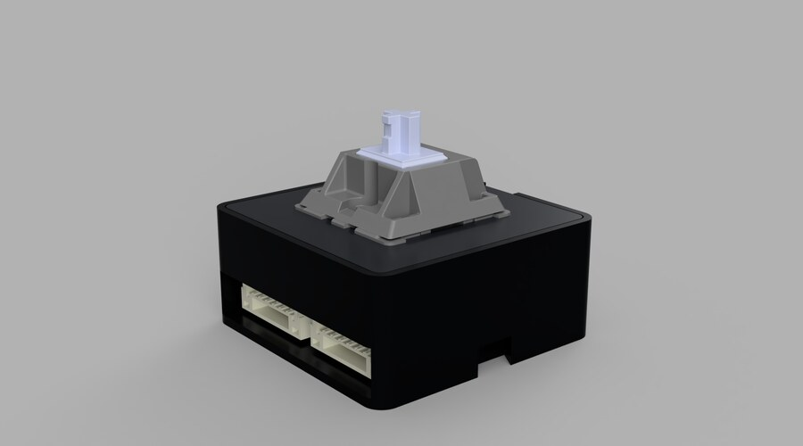
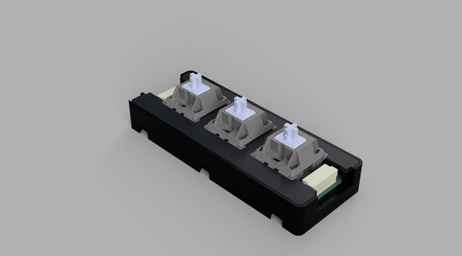
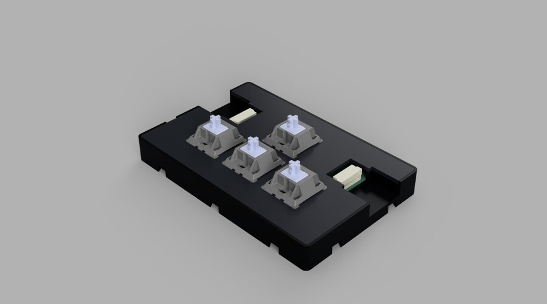
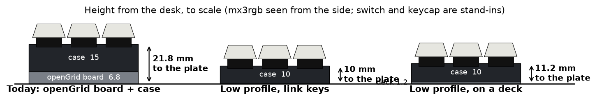
Each case takes the same grid cells as its openGrid version, 28 mm a side, so a layout from Plan your panel works either way. Most cases are 10 mm tall. Three stand a little higher, because of what the board carries: the mx1 1x1 (12.4 mm), the disp1 (12.0 mm) and the screen key’s module case (12.0 mm).
Joining the cases#
Every case has small dovetail pockets in its underside, at the middle of the cell edges round its outside. Three things fit them. Pick one for the whole panel:
- Link keys. A small bow-tie that presses into two facing pockets from below and holds two cases together. The panel is exactly as thick as the cases. To rearrange, pull the keys out.
- Padded keys and feet. The same key on a thin 0.8 mm pad, which spreads the load so a case hanging off its neighbour doesn’t lever the key out. Every other pocket takes a foot, so the panel stands level. The planner tells you how many of each your layout needs.
- A deck. One flat plate, 1.2 mm thick, cut to your layout, with studs that the cases press onto. It is the stiffest option, and the one to use for a panel you pick up and move. Make it in Plan your panel: choose Low profile under Case style, then open Deck, trays and cover.
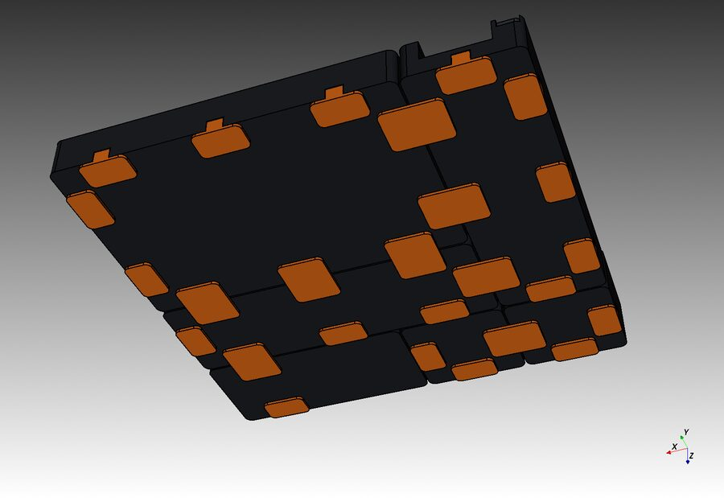
The deck’s extras#
In the planner’s Deck, trays and cover section:
- Deck: the whole board, or just the rectangle round the cases.
- Trays: a cable channel along any edge of the deck, half a cell wide, where leads lie under a lip instead of looping round outside the panel. A tray leaves a gap for the main module’s USB.
- Cover: one 1.5 mm plate over the whole panel, which closes the trays and hides the other cases’ lids and latches. It has openings for the keys, displays and knobs. The
mx11x1,mx3rgb,mx4rgbanddisp1cases show through it whole, so there is room round their keycaps. Labels formx3rgbandmx4rgbgo on their lids (Lid STL beside the labels); the others are printed onto the cover, for a two-colour print. If the openings would cut the cover into pieces, the planner says so: add trays on more sides.
Set your printer’s bed size first: the planner only makes a deck that fits it.
Downloads#
Each zip has the parts as STEP, for editing in CAD, and as STL, ready to slice. It also has the design notes for the whole range.
| Case | Fits | Grid | Download | |
|---|---|---|---|---|
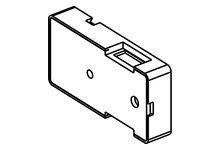 |
Main module | the main module | 2 × 1 | case-lowpro-main-module.zip |
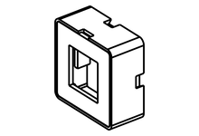 |
mx1 1x1 | the 25 mm single key. Stands 12.4 mm tall | 1 × 1 | case-lowpro-mx1-1x1.zip |
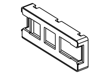 |
mx3rgb | three keys in a row. 6 mm short at each end, to tuck the leads into | 3 × 1 | case-lowpro-mx3rgb.zip |
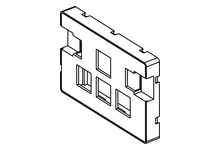 |
mx4 | the WASD cluster, mx4 and mx4rgb |
3 × 2 | case-lowpro-mx4.zip |
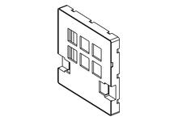 |
mx6rgb | six keys in a 3 × 2 grid | 3 × 3 | case-lowpro-mx6rgb.zip |
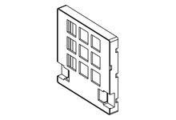 |
mx9rgb | nine keys in a 3 × 3 grid | 3 × 3 | case-lowpro-mx9rgb.zip |
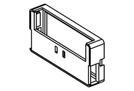 |
arc4 | the arc4 board only. Arcade buttons are too deep for a 10 mm case: mount them in a panel and run their leads back | 2 × 1 | case-lowpro-arc4.zip |
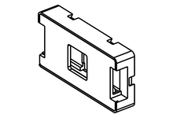 |
enc1 | one rotary encoder, standing up through the lid | 2 × 1 | case-lowpro-enc1.zip |
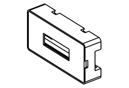 |
disp1 | the 128 × 32 text panel. Stands 12.0 mm tall | 2 × 1 | case-lowpro-disp1.zip |
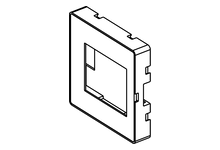 |
disp2 | the 1.8” colour display | 2 × 2 | case-lowpro-disp2.zip |
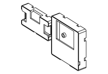 |
screenkey1 | two cases: the board (2 × 1) and the screen module (2 × 2), joined by the module’s lead. The module case stands 12.0 mm with the supplied 8 mm standoffs, 10 mm with 6 mm ones | 2 × 1 + 2 × 2 | case-lowpro-screenkey1.zip |
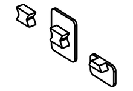 |
Link keys and feet | the plain link key, the padded key and the foot | — | case-lowpro-links.zip |
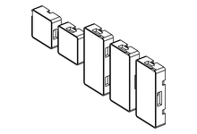 |
Link blocks | blank cells with no board, which join the cases round them and carry leads through. Straight, corner and three 2 × 1 blocks, one of them for the end of a disp2 |
1 × 1, 2 × 1 | case-lowpro-link-blocks.zip |
The deck, trays and cover are made for your layout in Plan your panel, so they are not in a zip.
Printing#
- Base: floor down.
- Lid: top down. The STL is already flipped, so no supports are needed.
- Link keys, padded keys and feet: flat, pad down. No supports.
- Deck and cover: flat, as the STLs lie.
- The keys are held by their fit alone, 0.1 mm a side. If they are loose or will not go in, scale them slightly in the slicer, or change
LINK_CLRin the design notes and rebuild.
Putting a panel together#
- Put each board in its base and press the lid on until the latches click, as for the openGrid cases.
- Plug the leads in between neighbouring cases. The planner’s Leads view shows where each one goes.
- Join the cases: press link keys up into the pockets from below, or press the cases down onto the deck.
- Push the switches through the lids into the sockets, and fit the keycaps.
The disp2’s leads leave through its ends, at desk level. A case pressed right against a used end blocks the lead. Join a disp2 to its neighbours on its other two sides, or put the 2x1 disp2 link block against that end: it has a window that takes the lead through.